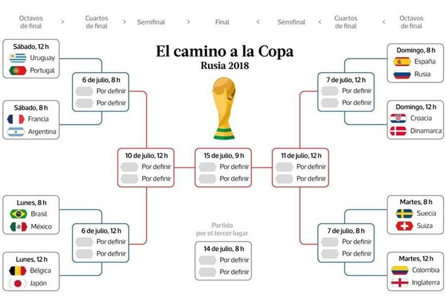
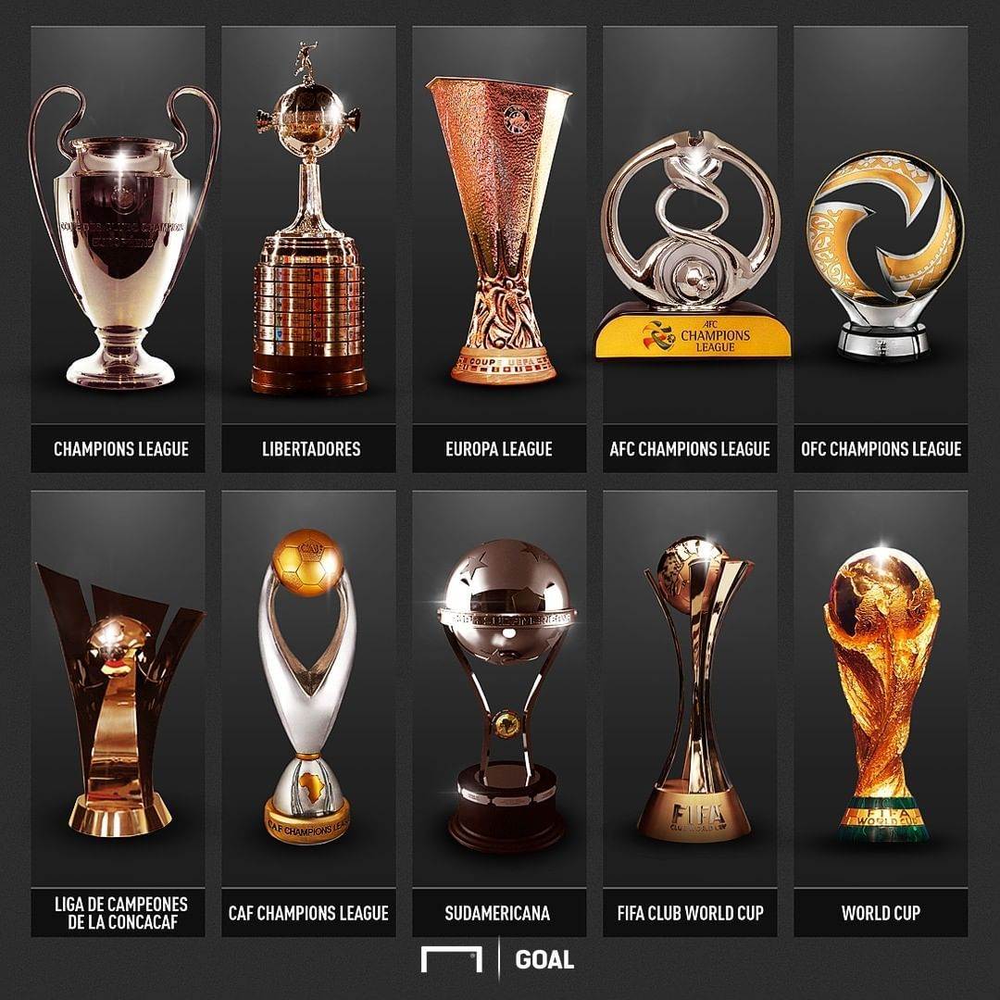

¿Qué es un torneo?
Es una competición que reune a numerosos equipos y que por medio de eliminatorias se
llega
al mejor de todos, por eso se le denomina el campeón mundial. |
 |

|
Historia de los torneosLos torneos de fútbol comenzaron en el siglo XIX con ligas locales en Inglaterra. Con el paso del tiempo, el deporte creció a nivel internacional y surgieron competiciones como la Copa del Mundo en 1930 y la Champions League en 1955, que hoy en día son de los eventos deportivos más vistos en el planeta. |
Tipos de torneos
|

|
|  |
Copas
|